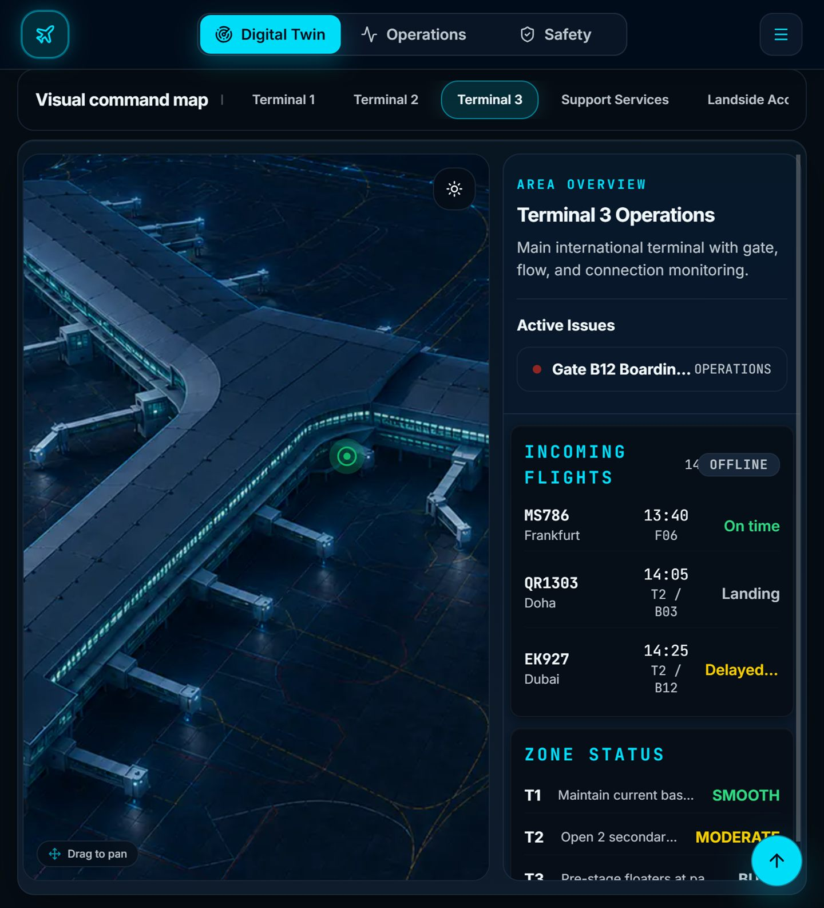

Cairo International Airport - Command Hub
A high-fidelity operational command dashboard focusing on real-time data visualization, clear information hierarchy, and responsive performance.

Context & challenge
Airport operations managers were overwhelmed by fragmented data sources. They needed a centralized, real-time command hub to monitor flight statuses, terminal crowd density, and maintenance alerts without cognitive overload.
Approach & key decisions
I architected a modular dashboard that prioritizes critical alerts and high-level KPIs while allowing users to drill down into specific terminals. I utilized a high-contrast dark mode UI to reduce eye strain for operators working long shifts in control rooms.
Tools & Technologies
Outcome & reflection
Balancing information density with readability was a major hurdle. I learned to heavily rely on progressive disclosure—showing only the absolute most critical data by default, and allowing users to expand panels for deeper context when needed.
Evidence & limitations
This page documents the current design rationale and available implementation. It does not claim a measured business outcome unless a verified metric is shown. Use the live-project link to inspect the working experience.